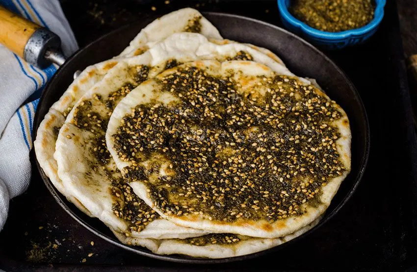

Description
This is a traditional Palestinian-Lebanese way of making Zaatar. It can be then eaten by dipping bread in olive oil and in the Zaatar or as part of another recipe. Will hold for a long time in the pantry. This recipe scales for larger amounts so long you preserve the ratios.
Ingredients:
- 1 Cup Zaatar leaves (without the stalks), cleaned and dried.
- 1 Cup sesame (optionally roasted).
- 1 Cup Sumac.
- 1 teaspoon salt.
- Optional: citric acid salt, for extra kick if the Sumac was not enough for you.
Steps:
- Lightly roast the sesame in a wide pan until it get a golden brown color.
- Wait for the sesame to completely cool down.
- Mix everything together, starting from the Zaatar and sesame while adjusting the Sumac (optionally citric acid) and salt to taste.
- Store in an airtight jar or container.